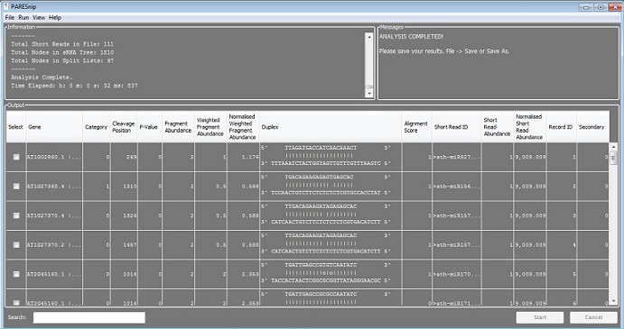

PAREsnip
PAREsnip is a fast and user-friendly software tool that allows users to search for potential targets of all sRNAs obtained from a high-throughput sequencing experiment.
The tool takes as input a set of transcript degradation fragments (degradome), sRNA sequences and a set of transcripts. The output comprises all potential sRNA/target duplexes evidenced through the degradome. By searching for targets of a complete "sRNAome" the tool can facilitate large scale identification and validation of sRNA targets, allowing the user to build a network of regulatory interactions between sRNAs and their target genes.
Starting PAREsnip
Choose PAREsnip from the Tools menu in the Workbench. To start the tool from the command line, navigate to the Workbench installation directory and issue the commandjava -jar Workbench.jar -tool paresnipThe syntax for providing inputs to the tool will be displayed.
PAREsnip window
The PAREsnip application after performing an analysis.
Additional information and statistics for each of the input data sets is provided in the information area (top left box). This information includes the number of sequences and sequence length distributions.
In the top-right box, shorter informational and instructional messages are provided to help guide a user through the analysis. The estimated time remaining to complete processing is also shown.
Small RNA/target interactions are shown in the 'Output' table. The table can be sorted by clicking on a column header. The column order may be changed using drag and drop. The search box at the bottom-left can be used to search the table - partial strings are matched and case is ignored.
PAREsnip menus
File menu
- Select Open... to choose the input files.
- Select Save... or Save as... to save results.
- Select Reset to reinitialise PAREsnip.
- 'Close' will close the window
Run menu
- Select Start to begin processing
- Select 'Cancel' to stop execution.
View menu
-
Select View T-plots in VisSR to visualise the results in VisSR.
A T-plot for each interaction can be displayed.